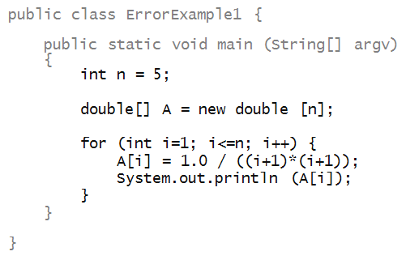
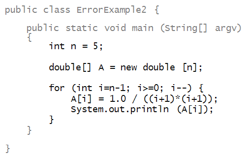
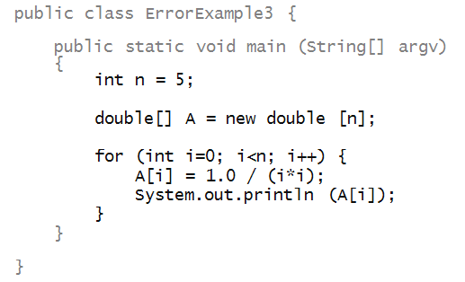
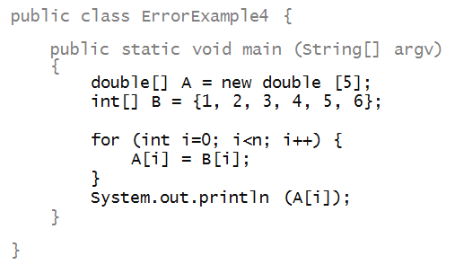

Lecture Notes 13: More about 1-D Arrays
Objectives
- Construct programs that manipulate arrays using loops
- Identify the key mechanisms to traverse and manipulate arrays without loss of data
- Distinguish the ways in which to traverse/access arrays using loops
- Demonstrate how to trace through an array manipulation using a table
- Identify and correct errors and bugs in the design of 1-D array exercises
Before Starting
- Read Sections 13.01 to 13.03 in the Codio Course
If you do not have your Codio course ready, use any text editor or simple IDE. Some possibilities are:
- Write using Sublime; Compile and run in the Terminal
- Use IDEs like: IntelliJ, DrJava, or JGrasp
Catching Up
Before we move forward, let's catch up (complete any remaining work from the previous module)
In this case, make sure we've got:
- One-Dimensional Arrays... Declaring, Initializing, and Accessing!
More examples
Example 1: let's write a program to "rotate" an array:

- Thus, we want to shift each element into the next position rightwards.
- The last element gets into the first position.
- First, we'll use the help of an additional array to
make this happen:

- We first copied elements A[0],...,A[n-2] into
locations ("boxes") B[1], ..., B[n-1].
- Then, we copied A[n-1] into B[0].
- The array B is in the desired form.
- Lastly, we copied all of B into A
so that A has the desired rotation.
Activity 1:
Trace each array in each step, showing the contents. Use a table!! (columns should focus on important variables, like iterators, array contents, and indices)
- It is possible to do without an additional array:

Activity 2:
Trace through the above example (
RotateExample2.java)
by hand to see how it works. Then, also trace through
the version below and explain why it does not work:

Reversing!
Next, in the second example, we'll write code to reverse an array:

Here's a version that uses an additional
array:

Activity 3:
Trace through the program above by hand!! (use a table!).
Activity 4:
Write code in
MyReverseExample.java
to achieve reversal
in the same array A,
without using an extra array like
B.
Adding!
Example 3: adding two arrays

- Here, we have added two arrays element-by-element.
- The resulting values are put into a third array
(C).
Activity 5:
Trace through the program above (use a table!).
Activity 6:
Write a different version
(in
AdditionExample2.java) that
takes an array
A and computes
the following sum of two arrays, element by element, as in the
above example.
However, in this case, you are to compute the sum (element-by-element)
of the array
A and its reversal,
putting the
result into array
B.
Do this without using a third array.
Activity 7:
Trace through the program below by hand.

What does it print?
Activity 8:
Trace through the program below by hand.

What does it print?
Activity 9:
Trace through the program below by hand.

What does it print?
Look up the definition of
factorial somewhere and relate that to
the computation above.
Note: in the exercise above, we learned a few new
things about using arrays:
- Sometimes, we create one additional slot so that
we can use the index A[n] when convenient.
- A for-loop can have other variables that change
with the loop besides the loop variable.
Reading and writing
Let's look at an example and how to read the code:

- First, look for the array declaration and identify the
type (e.g, int or double etc):

- Say to yourself, "A is an array that holds
double's".
- "B is an array that holds
int's".
- Then, look to see how much space is created:

- Say to yourself, "A's size is 5, created
using the new operator".
- "A's elements are all initially 0".
- "B's size is 5, directly initialized to
particular values".
- Now, check that, when variables are used to access
array components (slots), the bounds are right:

Writing:
- Writing the declaration:

- No spaces between either the type (double),
nor between the brackets.
- A single space between the right bracket the array variable
name.
- Creating space:

- A space on either side of the assignment operator, =.
- A space on either side of the new reserved word.
- The space after the double is optional. (Here, we have
a space.)
- No spaces for the size and brackets.
- Prefer the use of the new operator except
for small-ish arrays whose initial contents are known and fixed.

- No spaces when using the values in an array:

Using the array's built-in length. Consider this variation:

- We could either n or the array's length A.length.
- So, which one should we use?
- Generally, when the limit is a mathematically meaningful
variable like n above, you can use n.
- Otherwise, use the array's length.
- Sometimes, using an array's length variable can make
a program needlessly verbose.
- For example, here's the array-reversal example using
the length variable:

Variable names:
- Here is the first length example, re-written with
different variable names:

- For a program this short, it is probably a bit verbose.
- Notice: we used different names for the loop variables
in the two for-loops.
When things go wrong
Which of the following have errors (syntax or bugs)
and what are they? Can you tell just by reading?
Don't pay attention to the purpose - just whether
the program will compile or run.
Activity 10:

Activity 11:

Activity 12:

Activity 13:
The following program has multiple errors. See if you
can spot them by reading. Then in
ErrorExample4.java
fix the errors by editing the program. The array
A
needs to be an array of
double's.
